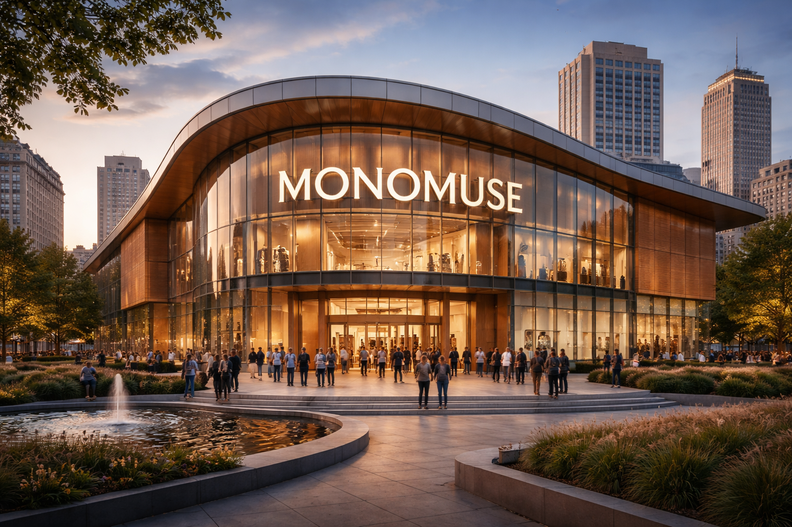
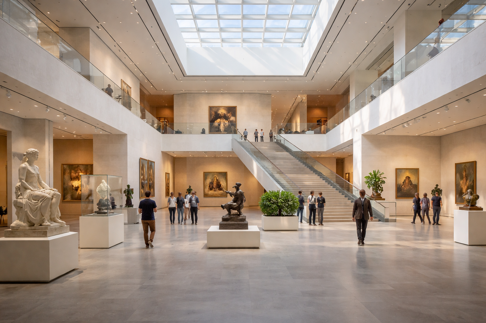

Images: MonoMuse Gallery Collection made by ChatGPT and Gemini
Our Mission
At MonoMuse, our mission is to bridge the gap between human creativity and digital innovation — creating a space where art challenges technology, and technology challenges art. We believe that curiosity is the foundation of culture, and every exhibition we host is designed to spark it.
Who We Serve
MonoMuse is built for everyone. Whether you are a seasoned art enthusiast, a curious student, a tech professional, or a family looking for an inspiring afternoon, our doors are open to you. We are proud to serve:
- Students and educators exploring the intersection of STEM and the arts
- Artists and designers seeking inspiration from emerging technologies
- Families and first-time museum visitors of all ages
- Researchers and professionals in creative and digital industries
Where It All Started
Map data © OpenStreetMap contributors | Powered by Leaflet
MonoMuse was founded in 2008 in Pittsburgh, Pennsylvania — a city with a rich history of both industrial innovation and artistic culture. What began as a small gallery of 12 digital installations has grown into one of the region's most celebrated contemporary museums.
Our Milestones
Over the years, MonoMuse has grown from a local gem into a nationally recognized institution. Here are some of the moments that defined us:
- 2008 — MonoMuse opens its doors with its debut exhibition, Signal & Noise
- 2012 — Launched our first interactive installation wing, drawing 50,000+ visitors
- 2015 — Partnered with Carnegie Mellon University to co-host the annual Digital Arts Symposium
- 2018 — Expanded to a second floor, doubling our exhibition space
- 2021 — Introduced virtual tours, reaching audiences in over 30 countries
- 2024 — Celebrated our one millionth visitor